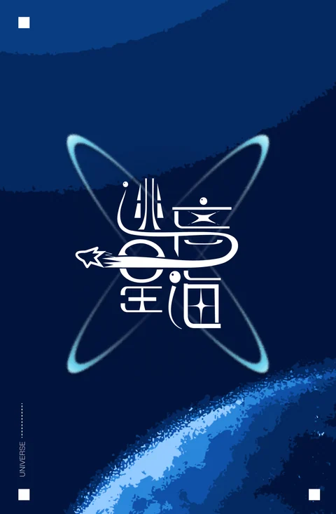
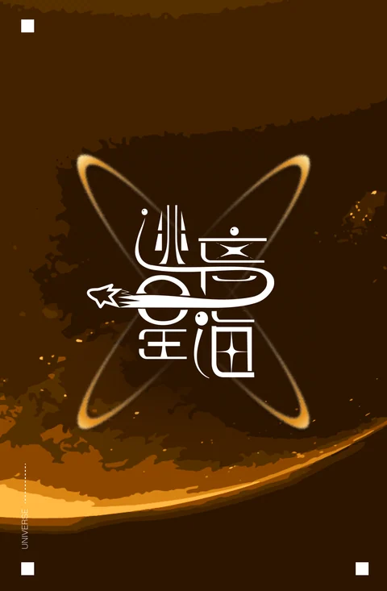
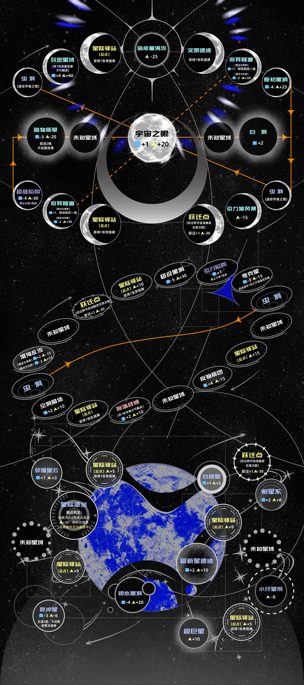

按宇宙分别呈现，保留全图、近看、定位和专注星图。当前格面效果与路线可以点击查询。
FROM THE TABLETOP TO THE STARS
原作的星海，
进入可以操作的屏幕。
本候选版使用本次提供的最新产品元件：地图、卡牌、牌背、角色与科普路书。黑色星尘、钴蓝星体和银色轨道保留原作的视觉语言，文字、按钮、棋子与行动仍由真实游戏界面承接。
这次带进来的原作内容
完整缩略图与可放大的牌面阅读器，同时显示当前游戏效果和牌库张数。
进入原作卡牌馆 →常规与机遇牌背用于区分牌库，保留原作图案。
保留原作角色形象，为人机对战增加身份感；资源、装备与状态仍清楚显示。
包含封面、16 页正文与封底，按需打开和放大阅读。
进入资料馆，切换科普路书 →按本批卡面和详规核对效果；涉及解释空间的条款，明确写为电子裁定。
查看电子裁定 →原始素材保留在项目资料归档。游戏使用适合网页加载的副本，没有通过生成图片重画牌面文字。
地图与规则如何对应
致密星域
正在读取当前地图效果…
宇宙之眼
正在读取当前地图效果…
第三宇宙普通行进
正在读取当前地图路线…
条件传送单独处理
奇异隧道需要落点判定；右下虫洞准确停留才经宇宙之眼到左上出口。它们不替代普通航行方向。
互动星图用原作美术作背景，另绘可以点击的格子、普通航行箭头、条件传送线、计划路线与棋子。装饰轨道不参与计格，当前效果以格子详情和同步星域表为准。
已同步明确差异，保留需要审定的解释当前候选已更新地图数值、第三宇宙路线、移动牌终点、导航 0／1 加格、经过型装备资源收益及新增【立即卸甲】。逆序响应、牌效移动“不抽基础牌”等仍是明确标注的电子裁定；不宣称与纸面逐条完全一致。
角色与牌背


以上是原作图像预览。卡牌馆的效果说明读取游戏数据；科普路书是原作科普资料，不作为游戏结算规则。
查看完整原作地图
这里保留地图的完整构图与印刷内容，便于与互动星图对照。展开后才加载地图图片。
展开完整地图 ↓
